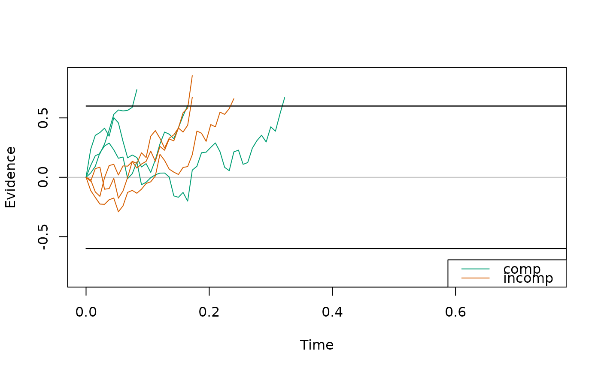
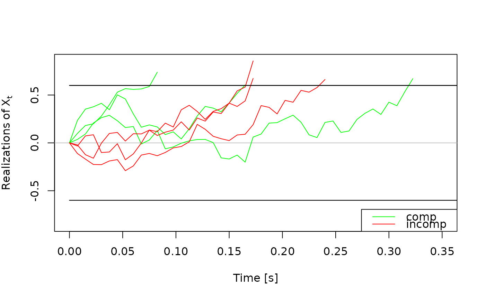
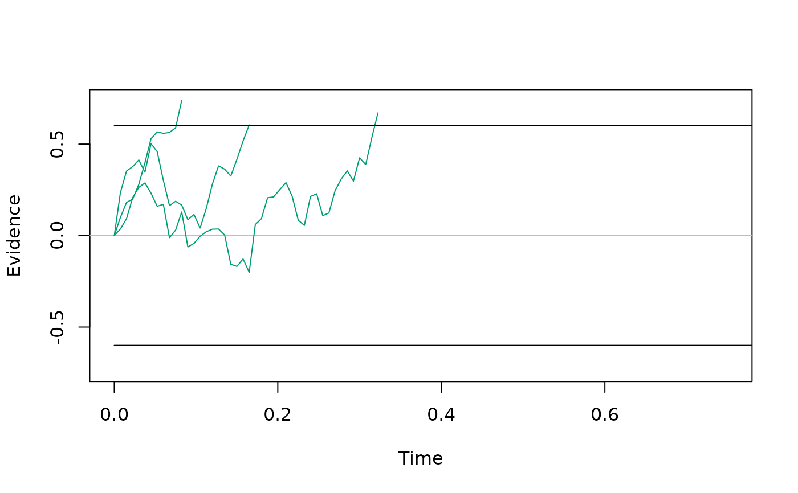
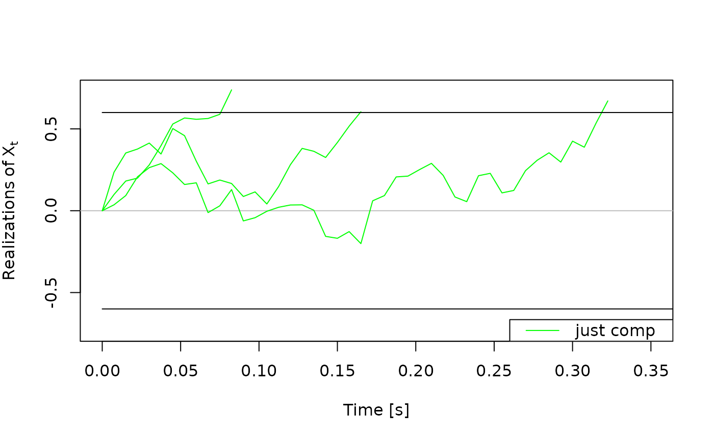

Creates a plot of simulated traces (i.e., simulated evidence accumulation processes) from a drift diffusion model. Such plots are useful for exploring and testing model behavior.
Arguments
- x
an object of type
traces_dm_listortraces_dm, containing the traces to be plotted, resulting from a call tosimulate_traces().- ...
additional graphical arguments passed to plotting functions. See
set_default_arguments()for the full list of supported options.- conds
a character vector specifying the conditions to plot. Defaults to all available conditions.
- col
a character vector specifying colors for each condition. If a single color is provided, it is repeated for all conditions.
- col_b
a character vector, specifying the color of the boundary for each condition. If a single color is provided, it is repeated for all conditions. Default is
"black".- xlim
a numeric vector of length 2, specifying the x-axis limits.
- ylim
a numeric vector of length 2, specifying the y-axis limits.
- xlab, ylab
character strings for the x- and y-axis labels.
Details
plot.traces_dm_list() iterates over all conditions and plots the traces.
It includes a legend with condition labels.
plot.traces_dm plots a single set of traces. Because
simulate_traces() returns an object of type traces_dm_list per
default, users will likely call plot.traces_dm_list() in most cases; and
not plot.traces_dm. plot.traces_dm is only relevant if users explicitly
extract and provide an object of type traces_dm.
The function automatically generates the upper and lower boundaries based on
the information stored within x.
Examples
# get a couple of traces for demonstration purpose
a_model <- dmc_dm()
some_traces <- simulate_traces(a_model, k = 3)
# Plots for traces_dm_list objects ----------------------------------------
# basic plot
plot(some_traces)

# a slightly more beautiful plot :)
plot(some_traces,
col = c("green", "red"),
xlim = c(0, 0.35),
xlab = "Time [s]",
ylab = bquote(Realizations ~ of ~ X[t]),
legend_pos = "bottomright"
)
#> Warning: The `legend_pos` argument of `plot.traces_dm_list()` is deprecated as of
#> dRiftDM 0.3.0.
#> ℹ Please use the optional `legend.pos` argument instead

# Plots for traces_dm objects ---------------------------------------------
# we can also extract a single set of traces and plot them
one_set_traces <- some_traces$comp
plot(one_set_traces)

# modifications to the plot work in the same way
plot(one_set_traces,
col = "green",
xlim = c(0, 0.35),
xlab = "Time [s]",
ylab = bquote(Realizations ~ of ~ X[t]),
legend = "just comp"
)
